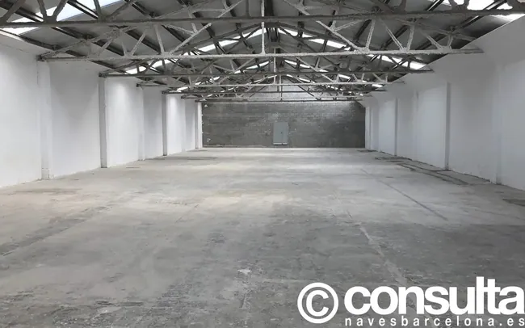
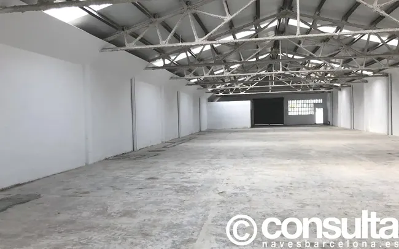
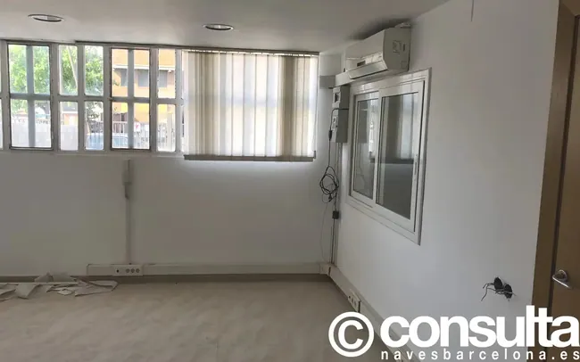

Plano · tocar un número de la lista lo marca acá
Letras: condiciones go/no-go · o: obra necesaria · números: lo que hay que medir o confirmar · c: lo que el chequeo de circulación marca hoy · trazos: el área o la franja de la cota · la línea azul: el largo libre a lo largo de la pista · ejes x/z: el origen de las cotas.
Condiciones go/no-go · si alguna sale mal, la nave se cae o hay que rehacer el layout
- Se decide en la visitaDecide: ≥ 4,2 m libres bajo jácenas, cerchas, luminarias e instalaciones en la vertical de la plataforma: plataforma a 1,4 m + 2,4 m del rider + 0,4 m de instalaciones (PROGRAMA §1). Si da menos, se baja la plataforma (a lo medido − 2,8 m), nunca el run-out.Altura libre medida con láser sobre la plataforma (m):
10 notas del layout
fuente de la cota: foto 1-2: 21 hiladas de 20 cm hasta el cordón inferior de la cercha del testero; las 6,25 m «libres» publicadas coinciden con la cumbrera (hastial ≈6,2 m en foto 2), se toma la más conservadora; es la cota del testero (fotos 1-2): en foto 3 el cordón de la cercha de fachada sale a ≈4,45 m, quizá porque el suelo cae hacia la calle
riesgo: Altura: con el cordón de las cerchas a ≈4,2 m, la plataforma no pasa de 1,4 m. Sale una pista de iniciación y jib, sin kickers, frente a los 4-5 m de la referencia. El ranking le dio 20/30 de altura por las 6,25 m del anuncio, que son de cumbrera. Antes de avanzar hay que pedir una sección acotada (cordón inferior, cumbrera, luminarias). Si el técnico lo aceptara, una plataforma de ≈2 m entre dos cerchas sería la única mejora posible.
riesgo: Trampolines fuera. Las 2 camas (marco de 5,2 × 3,05 m) solo caben a lo ancho dentro de un vano, para no quedar bajo una cercha, y piden ≥ 7,2-8,2 m de ancho con colchonetas. Con el llano de 14,2 m, la franja delantera (z 0-17,4) no tiene ese sitio sin tapar el portón, el pasillo del bloque o la recepción. Aun dentro del vano, el cordón queda a 3,05 m sobre la cama y a ≈1,3 m del borde de salto. Se sigue la prioridad de PROGRAMA (pista > pad > trampolines > gym): el gym cabe en la franja lateral de 2,65 m, donde las camas no entran.
riesgo: El altillo de 127-128 m² del anuncio está sin localizar. Si existe dentro de la nave fuera de las fotos (por ejemplo, contra el testero), choca con la plataforma y hay que replantear. Pedir su posición y la altura del forjado.
riesgo: El fondo del bloque de oficinas sale de foto 3 entre 10,3 y 10,9 m con f = 1160 px; foto 5 no distingue 10,6 de 11,5 m y su arista mejor medida da 10,9-11,1 m (10,7-10,9 con f 1080). Se dibujan 10,6 m (valor de foto 3) y su altura en 3,0-3,1 m: el fondo real puede estar entre 10,3 y 11,1 m, más lo que mueva la focal (≈9,5 m con f 1020). Si es mayor, el pad pierde fondo (el pad empieza en z = 11,7).
riesgo: Vestuarios en la franja de 3 m junto al pasillo de retorno: son estrechos y hay que llevar agua y saneamiento hasta ahí. Sobre la plataforma no puede colgar nada por debajo de 3,8 m (1,4 + 2,4). El visor pone una fila de campanas a ≈3,63 m en z ≈ 44,8, sobre el borde de la plataforma, y un conducto textil a 3,75 m en x ≈ 13,3, sobre vestuarios y gym. Son valores del visor, no del proyecto: en obra, las luminarias van entre cerchas, por encima del cordón.
supuesto: Pórticos cada 4,78 m (10 vanos) desde la fachada (z = 0) hasta el testero (z = 47,8), sin confirmar: con f 1160 las pilastras de foto 2 encajan mejor con 11 vanos de 4,345 m, y foto 3 (≈9,1-9,3 vanos de la cámara a la fachada, sin depender de la focal) pide f ≈ 1070-1095 con 10 vanos o ≈ 970-995 con 11; con una sola focal ninguna de las dos rejillas encaja en todas las fotos (ver match3). Las pilastras solo ocupan x 0-0,35 y 15,25-15,6, así que la pista (x 0,7-10,3) no depende del paso. Suelo horizontal (supuesto): en foto 5 las líneas de suelo fugan ≈8 px por debajo del horizonte que dan los huecos de fachada, lo que cuadraría con una caída de ≈0,2-0,3 m hacia la fachada (o con roll sin modelar); en foto 3 la cercha de fachada sale algo más alta (≈4,45 m), pero no se aprovecha.
supuesto: Alero 4,55 m (el muro sube ≈0,2-0,3 m sobre el apoyo de la cercha en foto 3) y cumbrera 6,25 m (dato publicado, igual al hastial de foto 2).
supuesto: Sentido de bajada −z: la plataforma va contra el testero de bloque, entre la cercha de z = 43,02 y el testero (z = 44,2-46,2), con 1,6 m detrás hasta su puerta (1,5 m libres entre la red y el testero, 1,3 m frente al DEA que la recepción cuelga junto a la puerta). El run-out termina en z = 17,7, frente al pad, con un paso de 1,2 m entre los dos (el pad termina en z = 16,5) que une las salidas laterales del final con la calle y el retorno. Así los acompañantes y monitores ven llegar a los riders de frente. Todo el programa queda junto a la entrada o a lo largo del pasillo de retorno, que va pegado a la franja de 0,2 m de la red: 2,0 m entre el margen de la red y los vestuarios, dibujado de 1,88 m entre la red y la cara de los extintores colgados (x = 10,5-12,38).
supuesto: Plataforma = 4,2 − 0,4 − 2,4 = 1,4 m. Rampa de 5 m (15,6° de media, ≈22,8° de máxima). Llano de 13,5 m (PROGRAMA: 14 de referencia y 9 de mínimo), que deja sitio a la demo y a una segunda tanda de módulos; los 0,7 m que pierde son el paso delante del run-out. Run-out de 8 m en las tres líneas. No hace falta quarter: lo que limita es la altura, no el fondo.
- Se decide en la visitaDecide: ≥ 28,5 m en línea recta a lo largo de la pista (plataforma 2 m, rampa, llano y el final más largo, run-out ≥ 8 m), del muro detrás de la plataforma al frente del altillo después del final. Si da menos, se acorta la rampa o el llano y se baja la plataforma, nunca el run-out.Distancia del muro al frente del altillo, a lo largo de la pista (m):
2 notas del layout
riesgo: Identidad: el catastro de la dirección publicada no cuadra con las fotos ni con las superficies. En la visita hay que confirmar qué nave es, el ancho entre medianeras, el largo y si el testero de bloque gris (sin pintar, con una puerta de 2 hojas) es un cierre nuevo que parte una nave mayor.
riesgo: El fondo del bloque de oficinas sale de foto 3 entre 10,3 y 10,9 m con f = 1160 px; foto 5 no distingue 10,6 de 11,5 m y su arista mejor medida da 10,9-11,1 m (10,7-10,9 con f 1080). Se dibujan 10,6 m (valor de foto 3) y su altura en 3,0-3,1 m: el fondo real puede estar entre 10,3 y 11,1 m, más lo que mueva la focal (≈9,5 m con f 1020). Si es mayor, el pad pierde fondo (el pad empieza en z = 11,7).
- Se decide en la visitaDecide: Dos salidas o más a la calle o a un espacio exterior seguro, con recorridos de evacuación ≤ 50 m (CTE DB-SI 3 §3, tabla 3.1), y sus puertas con ≥ 0,80 m de paso y 2,10 m bajo el dintel. Cada salida nueva solo vale si el muro da a la calle o a un patio con salida y la propiedad deja abrirla (las obras, en «Obra necesaria»).
- puerta peatonal de 1 m en la arista 0 (hueco 0, x 14,01 · z 0)
- salida de emergencia de 1,4 m en la arista 2 (hueco 5, x 8,03 · z 47,8) · obra o1 · no cumple: puerta door:5: 2,05 m de altura libre en el umbral (≥ 2,10 m)
Salidas confirmadas (cuáles, a dónde dan, ancho de paso):4 notas del layout
riesgo: Salida de emergencia: hay que comprobar que la puerta del testero da a exterior o a una vía de evacuación (detrás puede haber otra nave). Sin ella, desde el fondo hay más de 50 m hasta la fachada. Habitaclia marca la nave sin exutorios de humo y Consulta sin sprinklers; el uso deportivo puede pedir control de humos.
riesgo: La salida de emergencia del testero (hueco 5, la puerta existente de 1,40 × 2,05 m) tiene un escalón de ≈0,25 m (foto 1) y 2,05 m de paso sobre él: cumple los 2,00 m de DB-SUA 2 §1.1.1 pero no los 2,10 m del proyecto, y park3d-walk lo da como error (`door-head door:5`). Obra necesaria (propuesta, decisión de negocio; rp-f 24/11): rebajar el umbral a la cota del suelo y poner una hoja de 1,40 × 2,30 m con el dintel donde está (≈2,30 m sobre el suelo de dentro), que quita además el escalón; si fuera el terreno está 0,25 m más alto, una rampa exterior o subir el dintel 0,05-0,10 m (cargadero nuevo en el bloque). Medir en la visita la cota de fuera y el dintel. Todavía no se dibuja como hueco de la propuesta: el esquema no sabe guardar la medida de hoy de un hueco que la propuesta agranda (`openings[].proposed` solo dice el tipo de hoy).
supuesto: El portón TIR (dos hojas) queda como segunda salida a la calle y como entrada de módulos. Las piezas largas (tubos y rails de 4-6 m) entran en línea recta: portón (tramo x 4,7-6,0), pasillo del bloque, tramo desmontable del murete del pad, paso de 1,2 m delante del run-out y salida izquierda del final. La puerta del testero es la salida de emergencia del fondo, y detrás de la plataforma queda un paso libre de 1,2 m hasta ella. validate.py cuenta como salidas la peatonal y la del testero.
supuesto: Sentido de bajada −z: la plataforma va contra el testero de bloque, entre la cercha de z = 43,02 y el testero (z = 44,2-46,2), con 1,6 m detrás hasta su puerta (1,5 m libres entre la red y el testero, 1,3 m frente al DEA que la recepción cuelga junto a la puerta). El run-out termina en z = 17,7, frente al pad, con un paso de 1,2 m entre los dos (el pad termina en z = 16,5) que une las salidas laterales del final con la calle y el retorno. Así los acompañantes y monitores ven llegar a los riders de frente. Todo el programa queda junto a la entrada o a lo largo del pasillo de retorno, que va pegado a la franja de 0,2 m de la red: 2,0 m entre el margen de la red y los vestuarios, dibujado de 1,88 m entre la red y la cara de los extintores colgados (x = 10,5-12,38).
- Con margenDecide: Huella ≥ 0,28 m, contrahuella de 0,13 a 0,185 m y 0,54 ≤ 2C + H ≤ 0,70 (CTE DB-SUA 1 §4.2.1); ancho ≥ 1,20 m (PROGRAMA; el CTE pide 1,00-1,10); tramos de ≤ 2,25 m sin descanso. Una escalera existente que no cumple no sirve para el público (gym o altillo): hay que rehacerla o poner otra.
- de la plataforma (escalera): huella 0,3 m, contrahuella 0,17 m, ancho 1,27 m, tramo de 1,4 m sin descanso, sube 1,4 m
Huella × contrahuella × ancho de la escalera existente (m):2 notas del layout
supuesto: Recorrido del cliente: peatonal → vestíbulo y mostrador → alquiler (frente a +x, con el paso de 1,6 m para probarse las botas) → banco y taquillas → vestuarios por el pasillo de retorno → escalera de la plataforma, que sube hacia −x desde x 12,65.
supuesto: plantilla Stoke Mountain adaptada: plataforma 1.4 m × 2.0 m; drop-in de 1.10 m en 3.0 m; 1 terraza(s) de 12.3 m que caen 0° unidas por drops de 0.26 m en 2.6 m; carril de transición en la línea 1 (bajada de 9.5 m, 1 rollers de 0,3 m); 2 módulos a escala real por terraza (T1 cajones cortos, T2 cajón largo / rail / roller, down rail en el último drop), solo donde se llega con velocidad (µ 0,09); misma huella, mismos finales (run-out ≥ 8 m / quarter) y escalera; los módulos anteriores quedan en slope.legacyModules.
- Se decide en la visitaDecide: Ningún pilar dentro de la pista; los de la franja de 0,2 m del murete y la red, forrados (el murete se corta en cada uno); el pasillo de retorno, ≥ 1,80 m libres con los pilares.Posición y sección de los pilares junto a la pista (m):
- Se decide en la visitaDecide: Confirmar con la agencia o la propiedad la dirección, la referencia catastral y qué nave es (las fotos y las superficies tienen que ser de esta).Referencia catastral y número confirmados:
1 nota del layout
riesgo: Identidad: el catastro de la dirección publicada no cuadra con las fotos ni con las superficies. En la visita hay que confirmar qué nave es, el ancho entre medianeras, el largo y si el testero de bloque gris (sin pintar, con una puerta de 2 hojas) es un cierre nuevo que parte una nave mayor.
- Se decide en la visitaDecide: El ancho entre medianeras (cara de los pilares) que da para las líneas de la pista, su franja y el retorno de ≥ 1,80 m.Ancho interior entre caras de pilares (m):
1 nota del layout
riesgo: Identidad: el catastro de la dirección publicada no cuadra con las fotos ni con las superficies. En la visita hay que confirmar qué nave es, el ancho entre medianeras, el largo y si el testero de bloque gris (sin pintar, con una puerta de 2 hojas) es un cierre nuevo que parte una nave mayor.
Obra necesaria · lo que la nave no tiene hoy y la propuesta necesita: decisiones del usuario, a ver en la visita si se puede
- obra en un hueco existenteObra: Obra necesaria (propuesta, decisión de negocio; rp-f 24/11): rebajar el umbral a la cota del suelo y poner una hoja de 1,40 × 2,30 m con el dintel donde está (≈2,30 m sobre el suelo de dentro), que quita además el …En la visita: Medir en la visita la cota de fuera y el dintel.
- Hoy: c1: puerta door:5: 2,05 m de altura libre en el umbral (≥ 2,10 m)
- Hoy: c2: salida de emergencia 5: el umbral queda 0,25 m sobre el suelo de dentro: un escalón aislado en una salida (DB-SUA 1 §2.3) de más de 0,175 m (DB-SUA 1 §4.2.1, uso público sin ascensor); la salida cuenta (se sube)
De dónde sale
riesgo 12: La salida de emergencia del testero (hueco 5, la puerta existente de 1,40 × 2,05 m) tiene un escalón de ≈0,25 m (foto 1) y 2,05 m de paso sobre él: cumple los 2,00 m de DB-SUA 2 §1.1.1 pero no los 2,10 m del proyecto, y park3d-walk lo da como error (`door-head door:5`). Obra necesaria (propuesta, decisión de negocio; rp-f 24/11): rebajar el umbral a la cota del suelo y poner una hoja de 1,40 × 2,30 m con el dintel donde está (≈2,30 m sobre el suelo de dentro), que quita además el escalón; si fuera el terreno está 0,25 m más alto, una rampa exterior o subir el dintel 0,05-0,10 m (cargadero nuevo en el bloque). Medir en la visita la cota de fuera y el dintel. Todavía no se dibuja como hueco de la propuesta: el esquema no sabe guardar la medida de hoy de un hueco que la propuesta agranda (`openings[].proposed` solo dice el tipo de hoy).
Visto:
Medir y confirmar en la visita · 6, de las notas del layout
-
Detalle
medir en la visita:
altura del falso techo y si hay pilastra en la esquina de la oficina con la fachada (de eso depende si la ventana arranca en x ≈ 0,15 o ≈ 0,4).
Medido: -
Detalle
medir en la visita:
(≈4,45 m en foto 3 frente a 4,2 m en el resto).
Medido: -
Detalle
medir en la visita:
Medido: -
Detalle
Altura: con el cordón de las cerchas a ≈4,2 m, la plataforma no pasa de 1,4 m. Sale una pista de iniciación y jib, sin kickers, frente a los 4-5 m de la referencia. El ranking le dio 20/30 de altura por las 6,25 m del anuncio, que son de cumbrera.
Si el técnico lo aceptara, una plataforma de ≈2 m entre dos cerchas sería la única mejora posible.
Medido: -
Detalle
Identidad: el catastro de la dirección publicada no cuadra con las fotos ni con las superficies.
Medido: -
Detalle
La salida de emergencia del testero (hueco 5, la puerta existente de 1,40 × 2,05 m) tiene un escalón de ≈0,25 m (foto 1) y 2,05 m de paso sobre él: cumple los 2,00 m de DB-SUA 2 §1.1.1 pero no los 2,10 m del proyecto, y park3d-walk lo da como error (`door-head door:5`). Obra necesaria (propuesta, decisión de negocio; rp-f 24/11): rebajar el umbral a la cota del suelo y poner una hoja de 1,40 × 2,30 m con el dintel donde está (≈2,30 m sobre el suelo de dentro), que quita además el escalón; si fuera el terreno está 0,25 m más alto, una rampa exterior o subir el dintel 0,05-0,10 m (cargadero nuevo en el bloque). Medir en la visita
Medido:
Circulación · lo que el chequeo marca hoy (CTE DB-SI 3, DB-SUA): ver en la visita si el paso real es así
- no cumplepuerta door:5: 2,05 m de altura libre en el umbral (≥ 2,10 m)PROGRAMA (DB-SUA 2 §1.1 pide 2,00 m) · la salida de emergencia 5 es la puerta existente del testero (foto 1: 1,40 × 2,05 m sobre un escalón de 0,25 m): 2,05 m bajo el dintel cumplen los 2,00 de DB-SUA 2 §1.1.1, no los 2,10 del proyecto. Es obra, no replanteo: rebajar el umbral (hoja de 1,40 × 2,30 con el dintel donde está, sin escalón) o subir el dintel; propuesta en notes.risks de vilassar-serrapons (rp-f) y en docs/TRANSITABILIDAD.md, pendiente de la visita y de poder dibujar en el esquema un hueco existente que la propuesta agranda
- no cumplesalida de emergencia 5: el umbral queda 0,25 m sobre el suelo de dentro: un escalón aislado en una salida (DB-SUA 1 §2.3) de más de 0,175 m (DB-SUA 1 §4.2.1, uso público sin ascensor); la salida cuenta (se sube)CTE DB-SUA 1 §2.3 y §4.2.1; DB-SUA 9 y Anejo A · el escalón de 0,25 m del umbral de la salida de emergencia 5, la puerta existente del testero (foto 1: la hoja termina ≈0,25 m por encima del pie del testero; walk-audit-c vilassar 6): un escalón aislado en una salida se admite (DB-SUA 1 §2.3 c), pero no de más de 0,175 m (DB-SUA 1 §4.2.1, uso público sin ascensor), y la salida sigue contando (se sube). Lo mide walk desde checker-4 (25/11): antes `sill` solo servía para buscar la salida a su cota. Es obra en un hueco que ya existe, la misma decisión del usuario que `door-head door:5`: rebajar el umbral a la cota del suelo con una hoja de 1,40 × 2,30 (quita los dos) o, si fuera el terreno está más alto, una rampa exterior; o partir el escalón en dos de ≤ 0,175 con un peldaño por dentro (notes.risks de vilassar-serrapons, rp-f; docs/TRANSITABILIDAD.md, «Propuestas de obra»)
Fotos que conviene sacar
- Fachada y acera desde enfrente, con la calle a los dos lados (la llegada a pie y en coche, y dónde se aparca).
- Cada puerta (3: puerta peatonal, portón TIR, salida de emergencia) desde dentro y desde fuera, con el metro abierto en el paso libre y en la altura.
- La pared del arranque de la pista (detrás de la plataforma) de suelo a cubierta, con la jácena o la cercha de encima y el láser apuntando a su cara de abajo.
- El final de la pista: lo que hay después del run-out (muro, frente del altillo, salida) y el suelo de esa franja.
- Las dos medianeras de punta a punta, para contar pórticos y pilastras y ver si sobresalen.
- La cubierta y los lucernarios desde el centro de la nave, mirando a cada testero (para la luz del 3D y el estado de las placas).
- El suelo: estado, juntas, desniveles, sumideros y arquetas.
- El cuadro eléctrico, la acometida de agua y los desagües (vestuarios y aseos nuevos).
- El frente del altillo de punta a punta, y debajo: la altura libre, sus pilares y sus puertas.
- A. Altura libre sobre la plataforma: una foto con la medida a la vista.
- B. Largo libre para la pista: una foto con la medida a la vista.
- C. Salidas y evacuación: una foto con la medida a la vista.
- E. Pilares en la pista, su franja o el retorno: una foto con la medida a la vista.
- F. Que sea la nave del anuncio: una foto con la medida a la vista.
- G. Ancho interior: una foto con la medida a la vista.
- o1. Obra necesaria (x 8,03 · z 47,8): el sitio desde dentro y, si se puede, desde fuera, con lo que hay detrás.
- Repetir desde el mismo sitio las fotos del anuncio de abajo (el móvil a la altura de los ojos, sin zoom): con la nave medida se vuelven a ajustar las cámaras y el plano.


